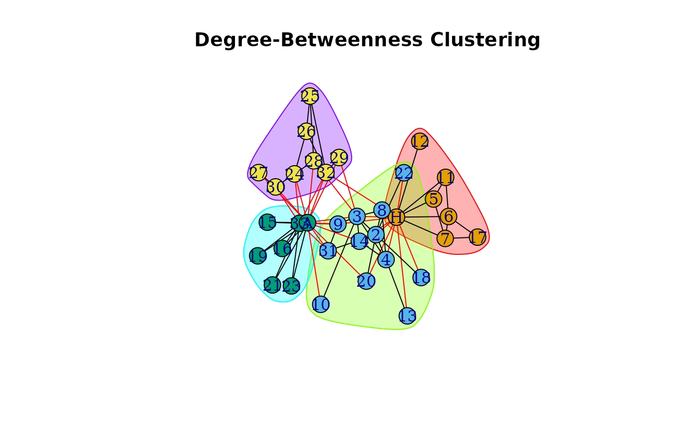
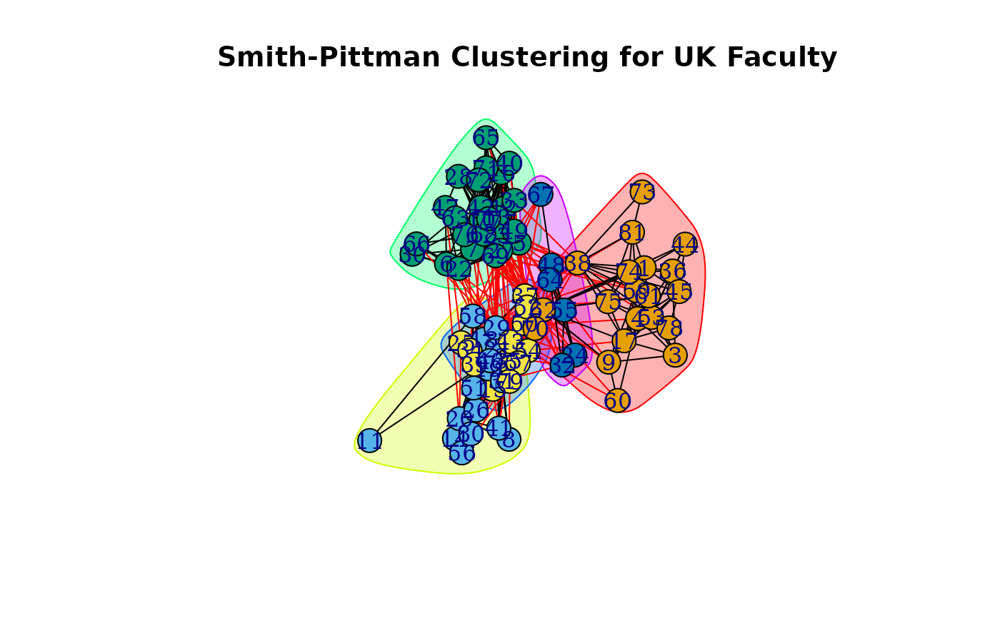

Community structure detection based on node degree centrality and edge betweenness
Source:R/cluster_degree_betweenness.R
cluster_degree_betweenness.RdReferred to as the "Smith-Pittman" algorithm in Smith et al (2024). This algorithm detects communities by calculating the degree centrality measures of nodes and edge betweenness.
Details
This can be thought of as an alternative version of igraph::cluster_edge_betweeness().
The function iteratively removes edges based on their betweenness centrality and the degree of their adjacent nodes. At each iteration, it identifies the edge with the highest betweenness centrality among those connected to nodes with the highest degree.It then removes that edge and recalculates the modularity of the resulting graph. The process continues until all edges have been assessed or until no further subgraph can be created with the optimal number of communites being chosen based on maximization of modularity.
References
Smith et al (2024) "Centrality in Collaboration: A Novel Algorithm for Social Partitioning Gradients in Community Detection for Multiple Oncology Clinical Trial Enrollments", doi:10.48550/arXiv.2411.01394
Examples
library(igraphdata)
data("karate")
ndb <- cluster_degree_betweenness(karate)
#> This graph was created by an old(er) igraph version.
#> ℹ Call `igraph::upgrade_graph()` on it to use with the current igraph version.
#> For now we convert it on the fly...
plot(
ndb,
karate,
main= "Degree-Betweenness Clustering"
)

ndb
#> IGRAPH clustering node degree+edge betweenness, groups: 4, mod: 0.35
#> + groups:
#> $`1`
#> [1] "Mr Hi" "Actor 5" "Actor 6" "Actor 7" "Actor 11" "Actor 12"
#> [7] "Actor 17"
#>
#> $`2`
#> [1] "Actor 2" "Actor 3" "Actor 4" "Actor 8" "Actor 9" "Actor 10"
#> [7] "Actor 13" "Actor 14" "Actor 18" "Actor 20" "Actor 22" "Actor 31"
#>
#> $`3`
#> [1] "Actor 15" "Actor 16" "Actor 19" "Actor 21" "Actor 23" "Actor 33"
#> + ... omitted several groups/vertices
data("UKfaculty")
# Making graph undirected so it looks nicer when its plotted
uk_faculty <- UKfaculty |>
igraph::as.undirected()
#> Warning: `as.undirected()` was deprecated in igraph 2.1.0.
#> ℹ Please use `as_undirected()` instead.
#> This graph was created by an old(er) igraph version.
#> ℹ Call `igraph::upgrade_graph()` on it to use with the current igraph version.
#> For now we convert it on the fly...
ndb <- cluster_degree_betweenness(uk_faculty)
plot(
ndb,
uk_faculty,
main= "Smith-Pittman Clustering for UK Faculty"
)
